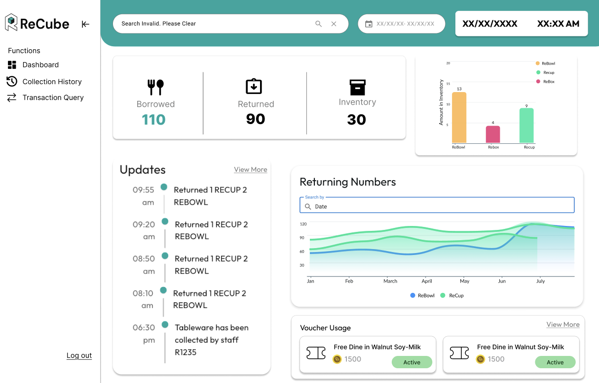
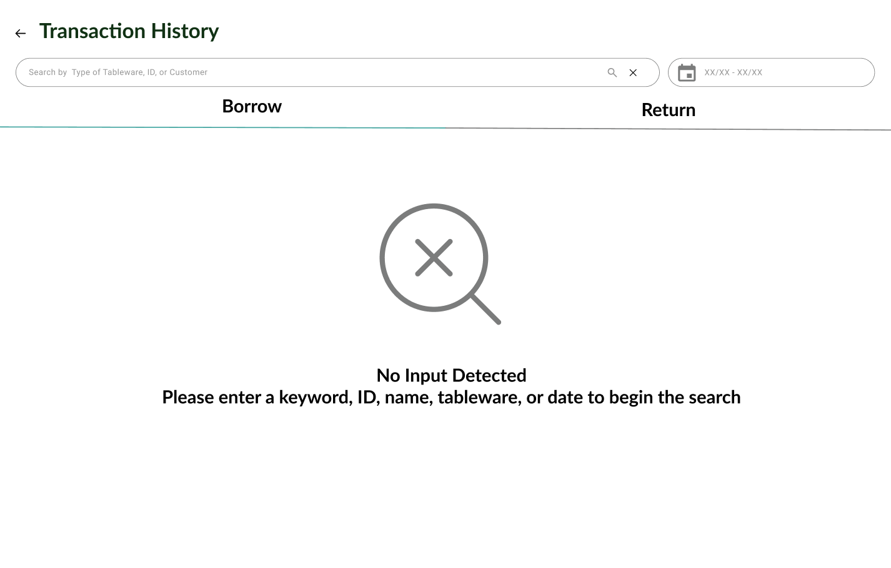

Empowering sustainable decisions through real-time data
Recube is a reusable packaging platform that partners with restaurants and malls to reduce single-use waste. As the sole UX and frontend designer, I designed and implemented a real-time analytics dashboard that gave 50+ restaurant partners visibility into their inventory reuse and waste reduction metrics.
My work focused on transforming complex logistics data into actionable insights, enabling restaurant managers and mall operators to make data-driven decisions about inventory management, sustainability impact, and operational efficiency.
"Great design isn't just about making things beautiful—it's about making complex data accessible and actionable for the people who need it most."
Partners lacked visibility into their sustainability impact
Before the dashboard redesign, restaurant partners and mall managers struggled to understand their role in Recube's circular packaging system. Key pain points included:
- No real-time visibility: Partners couldn't track how many containers were in circulation or when they needed restocking
- Limited impact metrics: Restaurant managers had no way to quantify their environmental impact or share sustainability achievements with customers
- Inefficient search and filtering: Finding specific data points required manual effort and custom reports
- Poor user experience: The existing interface was cluttered, outdated, and didn't match the needs of non-technical users
Previous dashboard interface lacked clarity and real-time data
Understanding partner needs through stakeholder interviews
I led 4+ stakeholder interviews with restaurant managers, mall operators, and Recube's internal operations team to identify pain points and unmet needs. This qualitative research revealed key insights:
4+
Stakeholder interviews conducted
50+
Restaurant partners served
~40%
Reduction in user friction
Key Findings:
- Restaurant managers wanted to see environmental impact metrics they could share with customers
- Mall managers needed real-time inventory alerts to prevent stockouts during peak hours
- Both groups struggled with the return journey UX—users didn't know where or how to return containers
- Partners wanted customizable views to focus on metrics relevant to their specific operations
"I need to know at a glance if we're running low on containers—I don't have time to dig through reports during lunch rush."
A real-time analytics dashboard built for action
I designed a clean, data-focused dashboard that prioritized real-time visibility, environmental impact metrics, and efficient search/filtering. The solution balanced technical requirements with partner needs, ensuring both restaurant managers and mall operators could access the data they needed without friction.
📊 Real-Time Analytics
Live inventory tracking showing containers in circulation, available stock, and return rates
🌱 Impact Metrics
Quantified environmental impact including waste diverted, CO2 saved, and sustainability scores
🔍 Advanced Search
Robust filtering and search functionality to quickly find specific data points and trends
⚡ Smart Alerts
Automated notifications for low inventory, high return rates, and operational anomalies

Dashboard overview showing real-time metrics and impact data
From user research to high-fidelity prototypes
1. User Research & Stakeholder Interviews: I conducted interviews with restaurant managers, mall operators, and Recube's operations team to understand their workflows, pain points, and data needs. This informed my information architecture and feature prioritization.
2. Information Architecture & Wireframes: I mapped out the dashboard's structure, prioritizing metrics based on user feedback. Low-fidelity wireframes helped validate the layout and interaction patterns with stakeholders before committing to visual design.
Early wireframes defining dashboard layout and hierarchy
3. High-Fidelity Design in Figma: I designed the visual interface in Figma, focusing on clarity, accessibility, and on-brand aesthetics. The green color palette reinforced Recube's sustainability mission while maintaining readability.
Advanced search functionality

Empty state and search prompts
4. Agile Development & QA Testing: I collaborated with developers during sprint planning to ensure designs were technically feasible. I also led QA testing sessions to identify usability issues before launch, ensuring equitable experiences across different user roles.
Throughout the design process, I established a lightweight design system to maintain consistency:
- Color Palette: Green gradients reinforcing sustainability, with high-contrast text for accessibility
- Typography: Clear hierarchy using Plus Jakarta Sans for readability across data tables
- Iconography: Intuitive icons representing inventory, returns, and environmental impact
- Data Visualization: Clean charts and graphs using accessible colors and clear legends
Measurable improvements in user experience and efficiency
The redesigned dashboard delivered tangible improvements for both Recube partners and the internal operations team:
~40%
Reduction in user friction
50+
Restaurant partners empowered
100%
Real-time data visibility
Key Outcomes:
- Restaurant managers could now quantify and share their environmental impact with customers
- Mall operators received automated alerts preventing inventory stockouts during peak hours
- The improved return journey UX reduced customer confusion by ~40%
- Recube's operations team could monitor system health and identify inefficiencies faster
"The new dashboard transformed how I run my restaurant's sustainability program. Now I can show customers exactly how many meals we've saved from waste."
Key takeaways from designing for sustainability
Stakeholder alignment is critical for complex systems: I learned that conducting thorough stakeholder interviews early prevented scope creep and ensured the final design addressed real pain points. Translating qualitative insights into a prioritized roadmap required balancing competing needs.
Data design requires empathy: Designing for non-technical users meant simplifying complex logistics data without losing important nuance. I learned to prioritize clarity over comprehensiveness, showing only the metrics that drove action.
Real-time systems need thoughtful UX: Live data introduces unique challenges—like handling loading states, error messages, and data refresh patterns. I learned to design for edge cases like slow connections and incomplete data.
Sustainability design tells a story: Environmental impact metrics aren't just numbers—they're powerful narratives that motivate behavior change. I learned to frame data in ways that resonated emotionally with restaurant managers and customers alike.
Agile collaboration accelerates iteration: Working closely with developers during sprint planning helped me understand technical constraints early, reducing back-and-forth and enabling faster implementation. QA testing sessions revealed usability gaps I wouldn't have caught in design reviews alone.